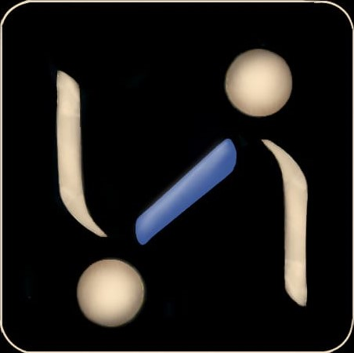

Welcome to
Cosmic
The Next Generation Social Media Platform Made in India
Get It On :

The Next Generation Social Media Platform Made in India
Get It On :
COSMIC is the Next Generation Social Media Platform Made in India and an all-in-one mobile app that is enough for all kind of needs whether it is building connections (professional as well as social connections), watching content(videos, pictures, podcasts, articles etc.) or if you want to connect with a service provider/ consultant or your potential clients.
COSMIC is the Next Generation Social Media Platform Made in India and an all-in-one mobile app that is enough for all kind of needs whether it is building connections (professional as well as social connections), watching content(videos, pictures, podcasts, articles etc.) or if you want to connect with a service provider/ consultant or your potential clients.
COSMIC is the Next Generation Social Media Platform Made in India and an all-in-one mobile app that is enough for all kind of needs whether it is building connections (professional as well as social connections), watching content(videos, pictures, podcasts, articles etc.) or if you want to connect with a service provider/ consultant or your potential clients.
Cosmic is the new virtual world and the next generation social media platform that has the potential to help you with all your internet needs. You can connect with people in your personal as well as professi-onal network, watch exciting content (videos/ photos etc.) as well as book an appointment with all type of service providers.
Since Cosmic is the Master App that would be helpful in both your professional as well as personal life, you might think that mixing up both professional and personal network could be a mess. Well! This part is taken care. Your profile on the Cosmic App would be divided into 2 sections: Work Profile and Personal Profile. You get to choose if you want to add someone or share any post to your personal profile or work profile.


Cosmic is the new virtual world that lets you go completely anonymous on the platform. It means that you can speak your heart out and truly express yourself without revealing your identity to other users. Therefore, the Home feed is divided into two sections: Anonymous and General. In anonymous feeds, you can find all the posts shared by people in your network anonymously. Whereas, in General Feed, you get to see posts shared by people in your network generally i.e. not anonymously.
You can start using the Cosmic App simply by registering under “Normal User” Category. You can enjoy all the features of Cosmic App as Normal User except that you cannot list yourself as service provider and for that you would need to upgrade to any of the other 3 User Categories.
Professionals who are academically qualified (wherever needed) and are in full time practice of any profession can register under the Professional User Category and get listed as service provider completely for free. You can connect with your potential clients through this App, receive professional inquiries and take online appointments through Cosmic.
People looking for freelancing opportunities can register themselves as Freelancer and get freelancing opportunities.
Students looking for project-based assignments/ internships can register themselves as a Guide to find good opportunities for learning and earning pocket money.


Professionals, Freelancers and Guide can receive online bookings through the Cosmic App without paying for any listing charges or Commission i.e. Completely Free.
Cosmic is a Next Generation Social Media platform made in India. It would have several new features that would make it “The Most Useful” Social Media platform for all our users. The exact details of the new features would be announced immediately after our launch! So, stay tuned!
-->